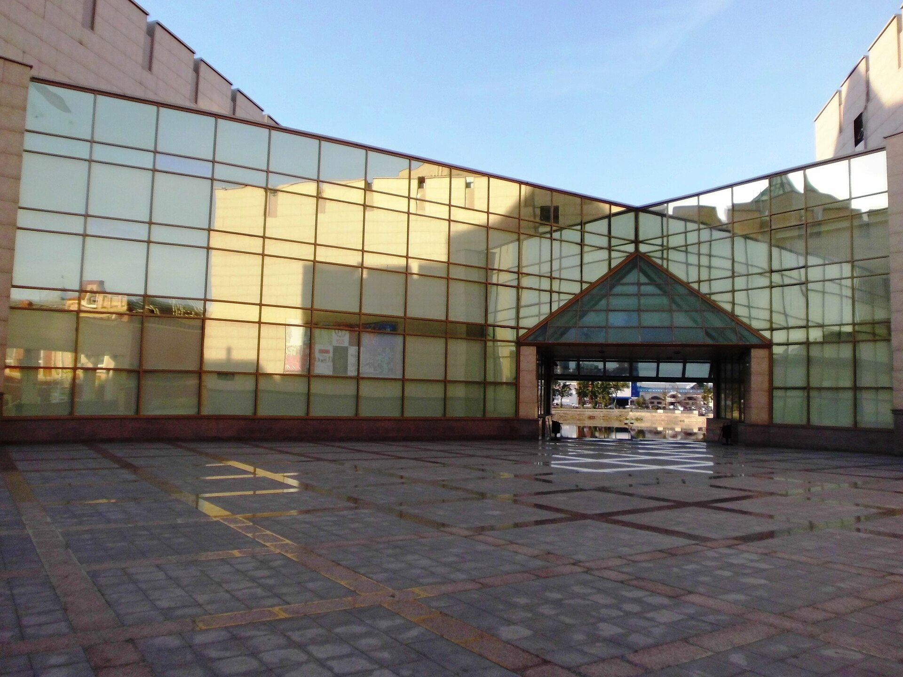

1913 — 2025 · более века музейного дела
История музея
Путь от кабинета любителей естествознания до крупнейшего краеведческого собрания Южного Урала — в тринадцати ключевых датах. Каждая дата — веха, которую музей отмечает в своей официальной истории.



Листайте фотографии вбок — в ленте есть ещё кадры.
-
1913
Начало
Зарождение музейных коллекций
5 сентября группа энтузиастов во главе с ботаником и географом И. М. Крашенниковым решила создать в Челябинске филиал Уральского общества любителей естествознания при нём — естественно-исторический музей. Из-за Первой мировой войны работу пришлось свернуть.
-
1918
Открытие
Музей Приуральского общества
18 апреля состоялось организационное собрание Приуральского общества изучения местного края во главе с педагогом и краеведом Д. В. Мошковым. Летом члены общества открыли историко-этнографический и естественно-исторический музей в доме купца на ул. Большой.
-
1922
Становление
Губернский музей и особняк Яушевых
28 сентября для размещения экспозиции арендован особняк купцов Яушевых на ул. Труда. Комплектование фондов поручено И. Г. Горохову — будущему директору музея на 35 лет.
-
1924
Признание
Визит Луначарского и коллекции столичного уровня
9 января музей посетил нарком просвещения А. В. Луначарский, оставивший запись в книге посетителей. К этому времени в музее уже хранились археологическая коллекция Н. К. Минко, ботаническая коллекция И. М. Крашенникова и богатое этнографическое собрание.
-
1930
Переезд
Шестьдесят лет в Свято-Троицкой церкви
«Золотое десятилетие краеведения» завершается переездом в здание Свято-Троицкой церкви, где музей размещался 60 лет — вплоть до 1989 года. Музей консультирует строителей тракторного завода и участвует в научных экспедициях.
-
1941
Война
Сохранение коллекций в годы Великой Отечественной войны
С началом войны экспозиция демонтирована, основная часть коллекций перевезена в здание мечети на ул. Елькина. И. Г. Горохов, порой оставаясь единственным сотрудником, сумел сохранить музейное собрание. В 1945 году музей возобновил деятельность.
-
1957
Смена эпохи
Уход Ивана Горохова
1 февраля И. Г. Горохов ушёл с поста директора. За 35 лет он многократно приумножил музейные фонды и стал эпохой в становлении музейного дела не только в Челябинске, но и на всём Южном Урале.
-
2003
Новое здание
Первый камень в фундамент крепости
3 июля в историческом центре города заложен первый камень специализированного здания музея. Проект разработал институт «Челябинскгражданпроект»: внешний облик напоминает крепость, но построен в современном стиле.
-
2006
Открытие
Новый музей на набережной Миасса
1 июня музей принял первых посетителей. К 2008 году открылись все три зала постоянной экспозиции, а в 2009 году — «Музей на крыше» в Восточной башне, работающий в тёплое время года.
-
2013
Главный экспонат
Метеорит «Челябинск» приходит в музей
17 октября в музей доставлен самый крупный фрагмент метеорита, извлечённый несколькими днями ранее со дна озера Чебаркуль. Ценный экспонат занял специальную витрину в центре Зала природы и древней истории.
-
2016
Новое имя
Государственный исторический музей Южного Урала
Краеведческий музей переименован в Государственный исторический музей Южного Урала. Собрание — более 300 тысяч единиц хранения, среди них памятники общероссийского значения. С 2018 года — совместные выставки с Музеями Московского Кремля.
-
2021
Возрождение
Дом общественного собрания
25 августа первое мероприятие в возрожденном зале общественного собрания в особняке мецената В. Покровского: спектакли, литературные и музыкальные вечера, костюмированные балы. На втором этаже — самая большая в Челябинске коллекция антикварной мебели XIX — начала XX века.
-
2025
Новая эпоха
Креативное пространство «Атом»
28 июня, в День молодёжи, открыто мультиформатное пространство «Атом»: лектории, дискуссионные клубы, выставки, перформансы, коворкинг и кофейня. Проект посвящён 80-летию отечественной атомной отрасли и родине академика Игоря Курчатова.
Что дальше
Сто лет — и всё только начинается
За сто лет музея сменились здания, имена и директора, но неизменным осталось главное: собрание, собранное с любовью и знанием дела, и открытость к новым форматам — от «Гороховских чтений» до фестиваля «Дебаркадер» и креативного пространства «Атом».
А вы можете продолжить знакомство с музеем прямо сейчас: пройдите виртуальный маршрут по трём залам и проверьте себя в квизе.